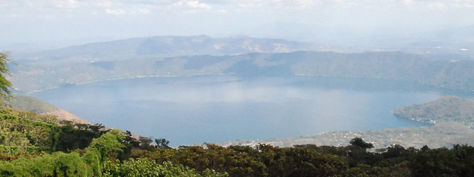
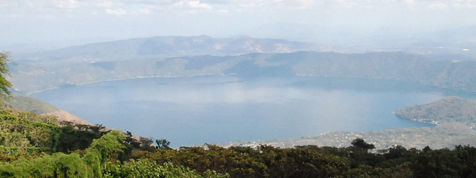
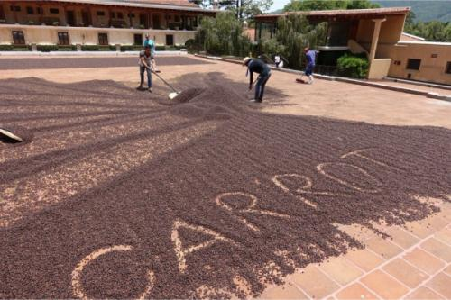
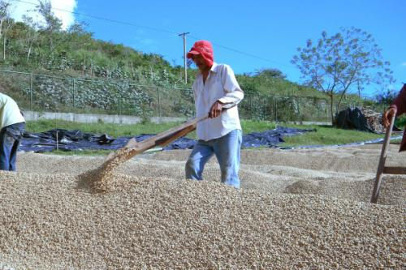

HELLO, COFFEE WORLD!!
スペシャルティコーヒーの世界へようこそ
スペシャルティコーヒーってなに？
１９８０年代にアメリカから始まり、世界的に広がってきたのが スペシャルティーコーヒーです。 いわゆる普通のコーヒーとの違いは、トレーサビリティー（生産履歴）が明確で個性的な風味特性を持ち何より飲んで美味しいと評価されたコーヒーだけがスペシャリティーコーヒーを名乗ることができます。 欠点豆の混入が極めて少ない生豆であり、そして、適切な輸送と保管により、劣化のない状態で焙煎されています。さらに、適切な抽出がなされ、カップに生産地の特徴的な素晴らしい風味特性が表現されることが求められています。 その素晴らしさは、飲んだ人のみがわかる至高の逸品です。
Coffee List
-
Finca La Cupula, Bourbon
-

Nicaragua Pablo Velasquez
-
 Costa Rica Jardin de Aromas Fabio Geisha
Costa Rica Jardin de Aromas Fabio Geisha -
 Kenya, Kayu Factory
Kenya, Kayu Factory -
 Peru, Blue Condor
Peru, Blue Condor
Equipment
-
 Macchinetta
Macchinetta -
 Syphon
Syphon -
 French Press
French Press -
Hario typed Corn
-
Nel Drip